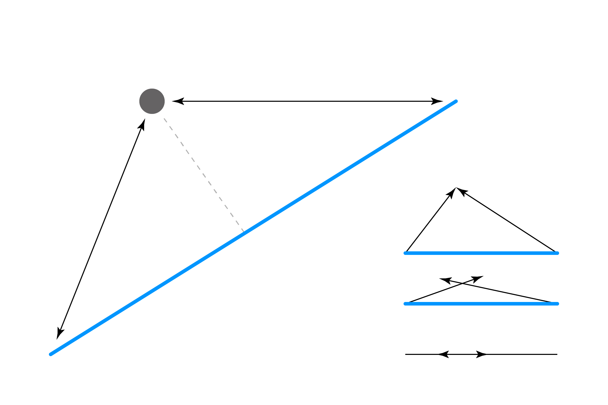

Поки що наші зіткнення здебільшого були простими та відносно невеликим вправами. Зіткнення з лінією трохи складніше, хіба що у вашій памʼяті залишився ще свіжий урок геометрії з середньої школи.
Лінія (див. примітку) визначається двома наборами X/Y координат. Ми можемо знайти довжину лінії за допомогою нашої старої перевіреної теореми Піфагора, але оскільки в цьому прикладі нам потрібно буде використати її три рази, давайте на це раз скористаємося зручною функцію dist() що входить у базовий набір функцій p5js:
const lineLen = dist(x1,y1, x2,y2);
Нам також потрібно визначити відстань між точкою та двома кінцями лінії:
const d1 = dist(px,py, x1,y1);
const d2 = dist(px,py, x2,y2);
Якщо значення d1 + d2 дорівнює довжині лінії, тоді ми маємо перетин з лінією! Можливо це не одразу інтуїтивно зрозуміло, але подивіться на наступну схему:

Якщо ми згорнемо обидві відстані, то вони будуть довші за лінію!
Однак тут є певна проблема. Оскільки числа з рухомою крапкою доволі точні, зіткнення відбувається, лише якщо точка знаходиться точно на лінії, що означає, що ми не отримаємо природного відчуття зіткнення. Це дуже схоже на наш перший приклад Точка і Точка. Щоб виправити це, ми створимо невеликий буфер і перевіримо чи сума d1 + d2 +/- входить в цей діапазон.
const buffer = 0.1; // чим вище значення, тим менша точність
Спробуйте пограти з цим значенням, поки не отримаєте результат до вашого смаку. Використовуючи значення буфера перевіримо наявність колізії:
if (d1+d2 >= lineLen-buffer && d1+d2 <= lineLen+buffer) {
return true;
}
return false;
Ось повний приклад, який поєднує все вищезазначене:
// координати рухомої точки
let px = 0;
let py = 0;
// координати кінцевих точок лінії
let x1 = 100;
let y1 = 300;
let x2 = 500;
let y2 = 100;
function setup() {
createCanvas(window.innerWidth, window.innerHeight);
noCursor();
strokeWeight(15); // збільшена жирність, щоб краще бачити лінії
x2 = width - 100;
y1 = height - 100;
}
function draw() {
background(255);
// оновлення координат точки координатами курсора
px = mouseX;
py = mouseY;
// результат перевірки на зіткнення
const isHit = isLineWithPointCollides(x1, y1, x2, y2, px, py);
// зміна кольору при зіткненні
if (isHit) {
stroke(255, 150, 0, 150);
} else {
stroke(0, 150, 255, 150);
}
// малювання лінії
line(x1, y1, x2, y2);
// малювання точки
stroke(0, 150);
point(px, py);
}
// перевірка на перетин між лінією та точкою
function isLineWithPointCollides(x1, y1, x2, y2, px, py) {
// отримання відстаней від точки до двох кінців лінії
const d1 = dist(px, py, x1, y1);
const d2 = dist(px, py, x2, y2);
// отримання довжини лінії
const lineLen = dist(x1, y1, x2, y2);
// невеликий додатковий буфер для збільшення області перетину
// це дозволить легше отримати колізію, бо не потрібне супер точне наведення
const buffer = 0.1;
// якщо дві відстані в сумі дорівнюють довжині лінії, тоді точка лежить на лінії
// зауважте, що тут ми використовуємо буфер, щоб збільшити діапазон для колізії
if (d1 + d2 >= lineLen - buffer && d1 + d2 <= lineLen + buffer) {
return true;
}
return false;
}
Ну добре, технічно те що ми називали тут лініями насправді називається відрізками. Але для простоти ми й надалі називатимемо їх загальним терміном лінії.
Цей алгоритм створено завдяки прикладу MrRoy на StackOverflow.
Далі: Лінія і Круг